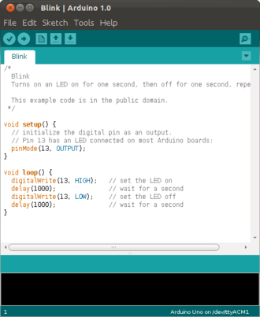
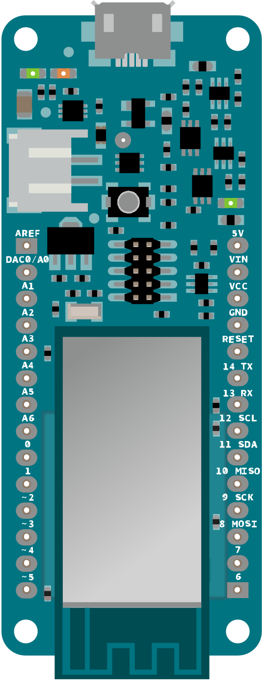

D. Arduino IDE
Before we can use our Arduino, we need to install the Arduino IDE on our computer.
.
Installation of Arduino Software
Depending on your operating system, the installation may be slightly different.
Linux
- download IDE from Arduino website [1]
- unzip and install running ./install.sh
- connect Arduino board through USB
-
you need to add your username to the tty and dialout groups:
sudo usermod -a -G tty yourUserName
sudo usermod -a -G dialout yourUserName - logout and log back in, for changes to take effect
- start IDE, make sure to select your Arduino board under Tools>Board
- select serial port under Tools>Serial Port
- change language in File>Preferences
- load the "Blink" scetch from File>Examples>Basics
- run your first scetch
Mac [4]
- download IDE from Arduino website [1]
- you may have to unzip the software
- to install it, copy the Arduino application in the Applications folder
- connect Arduino board through USB
- start IDE, make sure to select your Arduino board under Tools>Board
- select serial port under Tools>Serial Port
- change language in File>Preferences
- load the "Blink" scetch from File>Examples>Basics
- run your first scetch
Windows
- download IDE from Arduino website [1]
- install software
- connect Arduino board through USB
- install drivers
- start IDE, make sure to select your Arduino board under Tools>Board
- select serial port under Tools>Serial Port
- change language in File>Preferences
- load the "Blink" scetch from File>Examples>Basics
- run your first scetch
Shortcuts
The following shortcuts will become handy, when doing a lot of Arduino coding:
- Ctrl-S: Save
- Ctrl-R: Verify
- Ctrl-U: Upload
- Ctrl-T: Pretty Print
.
Arduino Board
The schematic on the side shows the layout of the Arduino Uno. We see the USB and power connector. Usually the Arduino gets its power through the USB port. In addition we see on the lower right two sets of pins: one for power and the other for analog inputs. On the top right we see two sets of pins for digital inputs and outputs. There are also a few LEDs: the power LED, the TX and RX (for communication) and the "L" LED, the one we will be using a lot.
.
Test: Blink
Getting the LED "L" to blink is actually quite easy: simply type the following code into the Arduino Software (or simply load the "Blink" scetch from File>Examples>Basics). Verify it (Ctrl-R) and Upload it (Ctrl-U) to the Arduino board. The LED should start blinking.
void setup() {
pinMode(6, OUTPUT);
}
void loop() {
digitalWrite(6, HIGH);
delay(1000);
digitalWrite(6, LOW);
delay(1000);
}
(see: https://www.arduino.cc/en/Tutorial/Blink)
.
References
[1] Download the Arduino IDE, https://www.arduino.cc/en/Main/Software
[2] Arduino Beginner’s Course, http://runtimeprojects.com/2016/03/arduino-beginners-course-introduction-to-arduino/
[3] ESP8266 Remote Controlled Sockets, http://randomnerdtutorials.com/esp8266-remote-controlled-sockets/
[4] Install the Arduino Software (IDE) on OS X, https://www.arduino.cc/en/Guide/MacOSX
.